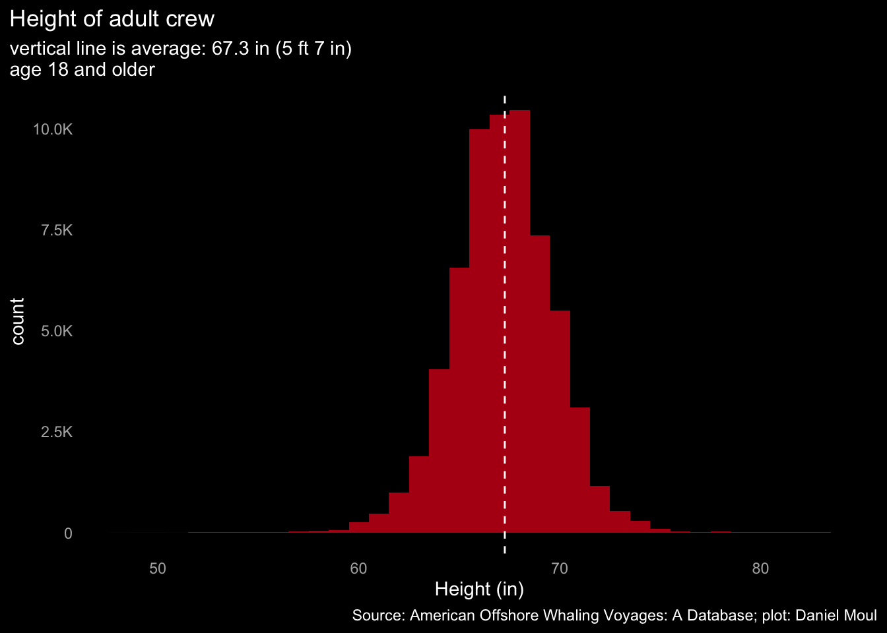
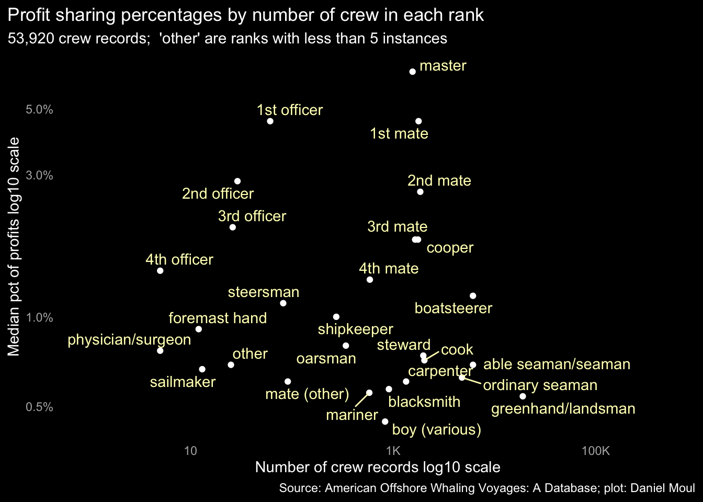

6 The crew
What of the men who crewed the whaling vessels? At whalinghistory.org there is a crew list data set(“Whaling History: Crew Lists” 2022) encompassing a subset of voyages that mostly set out between 1840 and 1860.
Crew Lists
The Act of 28 February 1803 contained the first legal mention and requirements for keeping a Crew List as part of the ship’s papers. Before a vessel could depart on a foreign voyage, the master had to deliver a list of the crew, verified by his oath, to the customs collector at that port. The collector then supplied the master with a certified copy of the list, copied in a uniform hand, along with a Clearance Certificate, at which time the master entered into a four-hundred-dollar bond to exhibit the Crew List to the first boarding officer he encountered upon his return to a U.S. port. There he was required to produce the persons named and described in the Crew List to give account for any crew members who were not present. Notes certifying sickness, discharge or desertion, usually signed by a consular official, were often included with the original list in order to prove that individuals not present were legally accounted for. (From Stein, Douglas L., American Maritime Documents 1776-1860, 1992.)
Name, age, height, and description of skin and hair were used to identify a person.
6.1 Number of crew
There seems to have been three common crew configurations in the data set, presumably corresponding to ship size and rig:
In the peak period mid-century some crews were much larger, likely due to larger ships, relatively longer voyages, or more crew were replaced along the way. In the twilight decades crews were smaller; perhaps technological advances in (1) propulsion (steam and diesel engines) and (2) more effective harpoons reduced the need for crew, or perhaps the lower profits enforced economies in crew size. See Chapter 9 Financial returns.

Multiple crew configurations are visible in scatterplots of number of crew by vessel tonnage. The smallest vessels were schooner or brig rigged, and the largest vessels were shipped rigged.
These patterns are visible when faceting by decade, particularly before the 1860s.
6.2 Age
The majority of the crew were in their twenties.
Looking at the same data in a cumulative density plot:
There were some non-adults on board. The ranks that included “boy” mostly applied to adolescents rather than to adult assistants in subservient roles. See Figure 6.13. Crew age 10 or less were likely children of other crew.
6.3 Skin color
Crew records in the years 1840-1860 typically include skin color. Perhaps surprising for voyages from New England ports, white crew were a minority, assuming, as noted in Figure 6.11, negro crew were under-reported.
How much did the racial composition vary in crews? Quite a lot.
A surprising number of the crews’ skin color was not recorded in the 1840s and 1850s.
It’s notable that the portion of crew with “unknown” skin color grew in the 1830s to the 1850s while crew noted as having skin color in categories summarized as “negro” or “mulatto” declined); then from the 1860s (the decade of the American civil war) the “unknown” portion declined significantly. Thus at least through the 1860s it’s likely that the data set under-reports the number of negro crew. Is this a sign of abolitionist protest among the whaling masters or their syndicates? Or perhaps the employment of runaway slaves?
6.4 Height of crew
Average crew height of adults (5 foot 7 inches) is two inches smaller than the current average 5 ft 9 in for males in the USA(Fryar CD 2021). Part of this difference could be due crew being from ethnic groups that are on average shorter. Part likely is due to comparatively poorer nutrition during the growing years compared to children today. This average excludes the 7,650 crew (9%) who were minors and thus might still be growing.

6.5 Crew rank
After data cleaning and consolidation of ranks, 53,920 crew records in the data set include 28 ranks that have at least five instances each.
6.6 Profit sharing: the lay system
As noted in Chapter 9 Financial Returns, profit sharing motivated crew and investors alike. A crew member’s share was determined by his rank and whatever special skills he had or considerations he could negotiate. In Moby Dick, Ishmael in his ignorance gets a laughably small share:
Peleg now threw open a chest, and drawing forth the ship’s articles, placed pen and ink before him, and seated himself at a little table. I began to think it was high time to settle with myself at what terms I would be willing to engage for the voyage. I was already aware that in the whaling business they paid no wages; but all hands, including the captain, received certain shares of the profits called lays, and that these lays were proportioned to the degree of importance pertaining to the respective duties of the ship’s company. I was also aware that being a green hand at whaling, my own lay would not be very large; but considering that I was used to the sea, could steer a ship, splice a rope, and all that, I made no doubt that from all I had heard I should be offered at least the 275th lay—that is, the 275th part of the clear net proceeds of the voyage, whatever that might eventually amount to. And though the 275th lay was what they call a rather LONG LAY, yet it was better than nothing; and if we had a lucky voyage, might pretty nearly pay for the clothing I would wear out on it, not to speak of my three years’ beef and board, for which I would not have to pay one stiver.
It might be thought that this was a poor way to accumulate a princely fortune—and so it was, a very poor way indeed. But I am one of those that never take on about princely fortunes, and am quite content if the world is ready to board and lodge me, while I am putting up at this grim sign of the Thunder Cloud. Upon the whole, I thought that the 275th lay would be about the fair thing, but would not have been surprised had I been offered the 200th, considering I was of a broad-shouldered make…(Melville 1851)
6.6.1 Ranks and lays
The crew most skilled at running the ship and handling the cargo received the largest lays. Consider, for example, the relatively large share that went to the cooper: since whale and sperm oil (and baleen too?) were stored in barrels, an incompetent cooper could turn a successful voyage into a financial disaster.
For the sake of clarity, below I use percentages instead of fractions (1/12th, 1/100th, etc.).

There were a lot of relatively low-skilled crew who received very little payout. The linear scales below in Figure Figure 6.15 make that more obvious:

Looking at the same data as a cumulative density plot, it’s easier to see that more than two-thirds of the crew received less than one percent of the profit.
There was more variation in the shares of the higher-paying ranks:
6.6.2 Aside: some lays were expressed differently
In 447 crew records the lay is expressed in the form of \(\frac{x}{M}\) rather than \(\frac{1}{x}\). I am unsure what this means compared to lays expressed as simple fractions (\(\frac{1}{x}\)). So I look at them separately below.
I treat each of the following as equivalent, assuming imprecision in how they were recorded rather than accepting that some crew of the same rank were paid 1,000 times more than others:
\[\frac{.10c}{M},\ \frac{10c}{M},\ and\ \frac{10}{M}\]
6.7 Change in lays over time
Did the portions change over time? In general, the highest-paid ranks did better over this time period, and the lowest-paid ranks did a little worse.
6.8 Insights from remarks in the crew records
Transcribers of the logbooks included remarks in the crew records. These address contractual bonuses, notes when or where crew members joined or left a ship’s roster, and other items of interest. In some cases they described how items were notated, for example:
‘(run)’ at left of name; between names appears an ‘x’ with ‘his’ atop it and ‘mark’ beneath it.
5,987 of 15,608 voyages in this data set (38%) include crew records (164,506 records); 15,379 of these crew records (9%) include remarks. While there are not enough remarks to generalize to all voyages and crews1, they provide a hint of the human experience that occurred a century or more ago.
6.8.1 Secondary roles
Some crew had a secondary skillset, which was noted in the remarks:
| Secondary roles | ||
| rank_clean | second_role | n |
|---|---|---|
| 4th mate | boatsteerer | 116 |
| cooper | shipkeeper | 91 |
| 3rd mate | boatsteerer | 72 |
| greenhand/landsman | carpenter | 54 |
| steward | shipkeeper | 42 |
| greenhand/landsman | blacksmith | 28 |
| boatsteerer | carpenter | 19 |
| carpenter | greenhand | 19 |
| carpenter | shipkeeper | 16 |
| cooper | carpenter | 13 |
| cook | shipkeeper | 12 |
| mariner | carpenter | 12 |
| shipkeeper | carpenter | 12 |
| able seaman/seaman | carpenter | 11 |
| cooper | boatsteerer | 11 |
| shipkeeper | boatsteerer | 10 |
6.8.2 Bonuses
Some crew negotiated a bonus in addition to their lay. Among the lowest ranks, some received a small wage instead of a lay.
| Bonus in addition to or instead of a lay | |||
| rank_clean | lay | bonus | n_crew |
|---|---|---|---|
| 2nd mate | 1-30 | $40 bonus | 1 |
| able seaman/seaman | — | $16 for passage home | 1 |
| boy (various) | — | $4 per month | 1 |
| boy (various) | — | $5 per month | 1 |
| greenhand/landsman | — | $5 per month | 2 |
| oarsman | 1-120 | $15 per month | 1 |
| ordinary seaman | 1-100 | $12 per month | 1 |
| ordinary seaman | 1-130 | $12 per month | 5 |
Two ships in the data set provided advances to their crew:
| Advance in addition to a lay | ||||
| voyage | rank_clean | lay | advance | n_crew |
|---|---|---|---|---|
| Sea Breeze : 1853-1856 | 2nd mate | 1-45 | $10 | 1 |
| Sea Breeze : 1853-1856 | 3rd mate | 1-45 | $25 | 1 |
| Sea Breeze : 1853-1856 | able seaman/seaman | 1-180 | $35 | 1 |
| Sea Breeze : 1853-1856 | boatsteerer | 1-95 | $15 | 1 |
| Sea Breeze : 1853-1856 | ordinary seaman | 1-180 | $15 | 1 |
| Helen Mar : 1883 | able seaman/seaman | 1-160 | $60 | 1 |
| Helen Mar : 1883 | able seaman/seaman | 1-170 | $60 | 3 |
| Helen Mar : 1883 | able seaman/seaman | 1-175 | $60 | 7 |
| Helen Mar : 1883 | boatsteerer | 1-80 | $80 | 1 |
| Helen Mar : 1883 | boy (various) | 1-160 | $50 | 1 |
| Helen Mar : 1883 | boy (various) | 1-190 | $50 | 1 |
| Helen Mar : 1883 | carpenter | 1-150 | $60 | 1 |
| Helen Mar : 1883 | cook | 1-115 | $90 | 1 |
| Helen Mar : 1883 | engineer | 1-120 | $80 | 1 |
| Helen Mar : 1883 | greenhand/landsman | 1-180 | $50 | 9 |
| Helen Mar : 1883 | mate (other) | 1-70 | $150 | 1 |
6.8.3 Cooks’ slush
A common perquisite of cooks was a portion of the slush, a slurry of fat left in empty meat barrels. Some received it in barrels, others got cash instead.
| Receiving a share of the slush | |
| slush perquisite | n_crew |
|---|---|
| 1/2 slush | 131 |
| 1/3 slush | 9 |
| 1/4 slush | 9 |
| no slush | 3 |
| slush | 2 |
| Receiving cash instead | |
| slush perquisite | n_crew |
|---|---|
| $5 per barrel slush | 3 |
| $1o if he gives capt satisfacti 1/3 slush | 1 |
| $25 if he takes care slush gives satisfaction | 1 |
| $4 per barrel slush | 1 |
| $5 per barrel slush he makes | 1 |
| $6 per barrel slush | 1 |
In some cases, conditions applied:
| Share of the slush: conditions apply | |
| voyage | slush perquisite |
|---|---|
| New Bedford : 1850-1851 | 1/3 slush if he gives capt satisfaction |
| Triton : 1850-1853 | $1o if he gives capt satisfacti 1/3 slush |
| Hope II : 1851-1857 | 1/2 slush but no slush if captain is dissatisfied |
| Magnolia : 1851-1854 | 1/2 slush if he performs duty to master's satisfacti returns in ship |
| Mary and Martha : 1851-1855 | 1/2 slush if deserving |
| Massachusetts : 1851-1856 | 1/2 slush if capt says he is deserving it |
| Hercules : 1853-1857 | 1/2 slush if he performs his duty satisfactorily |
| Oregon : 1853-1857 | 1/2 slush if he returns ship pleases master |
| William Thompson : 1853-1857 | if he returns in ship 1/2 slush provided he performs his duty satisfactorily |
| Greyhound : 1854-1856 | 1/2 slush if a good cook |
| Mary : 1854-1856 | 1/3 slush, 140 if he gives captain satisfaction |
| Frances Henrietta : 1855-1860 | 1/2 slush if he returns in ship does his duty to capt's satisfaction |
| Mercury : 1855-1859 | $25 if he takes care slush gives satisfaction |
| D(r). Franklin : 1856-1859 | 1/2 slush if satisfactiis given captain or way 1/140 |
| Sea Ranger : 1856-1860 | 1/2 slush at expirati voyage |
| America : 1857-1861 | 1/3 slush if he does his duty satisfactorily |
| Hope II : 1857-1863 | 1/2 slush if he gives satisfactito captain if he does not give satisfactihe receives none |
Some cooks didn’t live up to their part of the agreement (“crossed out” in the crew record remarks field):
| Sometimes cooks lost their share of the slush | |
| voyage | slush perquisite |
|---|---|
| Messenger : 1851-1855 | 1/2 slush, crossed out |
| Roman : 1851-1855 | 1/2 slush, crossed out |
| Swift : 1853-1856 | 1/2 slush, crossed out |
| Abigail : 1856-1860 | 1/2 slush providing he return in ship performs his duty to satisfacti master, crossed out |
| John Howland : 1858-1863 | 1/4 slush, crossed out |
6.8.4 Leaving the ship
Crew who were too ill left their ship in hopes that a more suitable environment would aid their convalescence, or if they were contagious, to avoid infecting the rest of the crew. The records note the following as the most common locations:
| The most common places to discharge the sick | |
| location | n_crew |
|---|---|
| hawaii (sandwich islands, maui, lahaina, oahu, honolulu) | 76 |
| unspecified (left sick, discharged sick, sent home sick) | 40 |
| azores (fayal) | 29 |
| peru (callao, paita) | 20 |
| cape verde islands (santiago, brava) | 15 |
| st helena | 12 |
| chile (valparaiso, talcahuano) | 9 |
| australia (new holland, sydney, hobart, swan river, west austr.) | 6 |
| new england (newport, new bedford) | 4 |
| new zealand (bay of islands) | 3 |
In was not uncommon for crew to die en route from sickness or injury.
| Causes of death | |
| reason | n_crew |
|---|---|
| unspecified (died, dead, did not return) | 1,198 |
| drowned, lost overboard | 155 |
| scurvy | 20 |
| died in wreck | 7 |
| brain fever, tuberculosis, smallpox | 5 |
| alcohol poisoning | 2 |
| killed by whale | 1 |
| mercury posioning (typcially treating syphilis) | 1 |
In other cases, crew deserted. Life as a sailor was hard, and hard masters could make life harder still.
| The most common places to desert | |
| location | n_crew |
|---|---|
| unspecified (deserted, run, run away, ran, ran away, deserted during voyage) | 813 |
| australia (new holland, sydney, hobart, swan river, west austr.) | 212 |
| hawaii (sandwich islands, maui, lahaina, oahu, honolulu) | 132 |
| new england (newport, new bedford, fairhaven) | 116 |
| azores (fayal) | 90 |
| chile (valparaiso, talcahuano) | 82 |
| peru (callao, paita) | 80 |
| new zealand (bay of islands) | 41 |
| deserted at this port | 18 |
| tahiti (society islands) | 16 |
| st helena | 14 |
| brazil (rio, rio de janeiro, bahia, pernambuco) | 13 |
| hong kong | 11 |
| cape verde islands (santiago, brava) | 10 |
Some remarks related to leaving the ship are brief pointers to human drama; we can imagine the details. Below are a sampling:
| Some notable remarks |
| remark |
|---|
| departed ship by mutual consent went onboard brig francis of bristol ri |
| deserted before sailing from fairhaven |
| deserted before sailing from new bedford |
| ran away before sailing |
| ran away sechelles went on board english mail steamer to cape town and mauritius |
| run away and died in tasmania |
| shipped azores deserted barbados bwi no wages due |
| thomas gibbs deserted before sailing and manuel ducevill in his room |
| transferred to ship triton as a prisoner for trial to the us |
| transferred to ship triton as a witness for trial to the us |
| transferred to ship triton as witness for trial |
| transferred to ship triton from as prisoner at st helena |
6.8.5 Joining en route
Masters added to their crew en route, replacing crew lost to sickness, death, or desertion. The new crew came from these same ports:
| Most common locations where crew joined en route | |
| location | n_crew |
|---|---|
| hawaii (sandwich islands, maui, lahaina, oahu, honolulu) | 1,168 |
| australia (new holland, sydney, hobart, swan river, west austr.) | 636 |
| chile (valparaiso, talcahuano) | 417 |
| peru (callao, paita) | 328 |
| tahiti (society islands) | 300 |
| new zealand (bay of islands) | 140 |
| azores (fayal) | 109 |
| brazil (rio, rio de janeiro, bahia, pernambuco) | 86 |
| st helena | 78 |
| maritius | 77 |
| other (mostly islands) | 66 |
| cape verde islands (santiago, brava) | 49 |
| new england (newport, new bedford) | 40 |
| brazil | 30 |
| south africa (cape town, simons town, good hope) | 26 |
| hong kong | 20 |
| navigator island | 20 |
| tacoma | 15 |
| fegee islands | 13 |
| guinea (pita) | 12 |
Assuming the average number of crew per voyage (28) generalizes to all voyages, the estimated percentage of all crew for which there are remarks is only 4%.↩︎